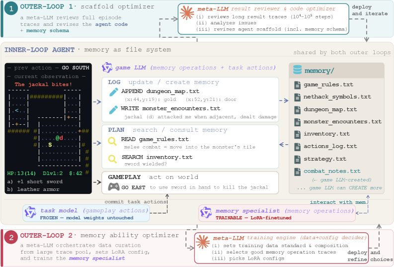
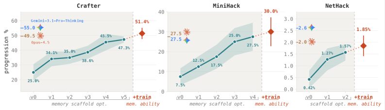
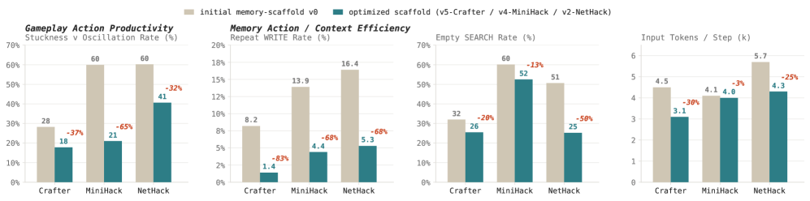
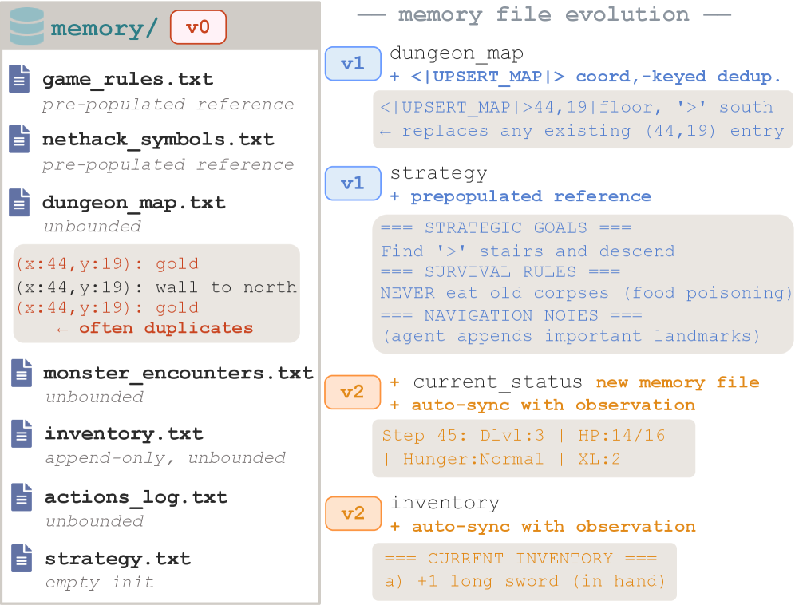

Stanford's take: agent memory shouldn't be a fixed module (RAG, a vector store) — it should be a trainable skill, the way cognitive science treats "metamemory" (knowing what to record, when to recall, how to organize). AutoMem promotes file-system ops to first-class actions and automates two axes — the structure (a meta-LLM rewrites the memory scaffold by reviewing full traces) and the proficiency (train a memory specialist on the agent's own good decisions). Optimizing memory alone makes a 32B open model ~2×–4× better on long-horizon games, matching frontier systems. Stanford의 관점: 에이전트 메모리는 고정 모듈(RAG, 벡터스토어)이 아니라 학습 가능한 스킬이어야 한다 — 인지과학이 "메타메모리"(무엇을 기록할지, 언제 회상할지, 어떻게 조직할지 아는 능력)를 다루듯. AutoMem은 파일시스템 연산을 일급 행동으로 승격하고 두 축을 자동화한다 — 구조(메타-LLM이 전체 트레이스를 리뷰해 메모리 스캐폴드를 재작성)와 숙련도(에이전트 자신의 좋은 결정으로 메모리 스페셜리스트를 학습). 메모리만 최적화해도 32B 오픈 모델이 장기 게임에서 ~2~4배 좋아져 프론티어 시스템에 필적한다.
Cognitive science: the learned skill of deciding what's worth remembering, when to retrieve it, and how to organize it. AutoMem imports this framing to LLM agents.인지과학: 무엇을 기억할 가치가 있는지, 언제 꺼낼지, 어떻게 조직할지 정하는 학습된 스킬. AutoMem이 이를 LLM 에이전트에 들여온다.
The agent's memory is a directory of files it manages via read/write/search/append/create — put on equal footing with world actions, so memory decisions are observable and learnable.에이전트 메모리는 read/write/search/append/create로 관리하는 파일 디렉터리 — 세계 행동과 동등하게 두어 메모리 결정이 관측·학습 가능해진다.
Per step the agent runs LOG ("what is worth recording?") and PLAN ("what do I need to recall to act now?"). These are where the learned memory skill lives.매 스텝 에이전트가 LOG("무엇을 기록할까?")와 PLAN("지금 행동하려면 무엇을 회상할까?")을 실행. 학습된 메모리 스킬이 사는 곳.
Two axes: the structure supporting memory (prompts, file schema, action vocabulary) and the model's proficiency at using it. The scaffold sets the ceiling; training pushes the model toward it.두 축: 메모리를 떠받치는 구조(프롬프트·파일 스키마·행동 어휘)와 그걸 쓰는 모델의 숙련도. 스캐폴드가 천장을 정하고, 학습이 모델을 그 천장으로 민다.
Because episodes run for thousands of steps and a memory mistake surfaces late, a strong LLM reviews the whole trace like a code review — not a scalar reward — to find where memory went wrong.에피소드가 수천 스텝이고 메모리 실수는 늦게 드러나므로, 강한 LLM이 전체 트레이스를 스칼라 보상이 아니라 코드 리뷰처럼 읽어 메모리가 어디서 틀렸는지 찾는다.
Only a LoRA memory model is trained; the model that commits world actions stays frozen. Two instances share one history — the specialist does LOG + memory-consult, then hands off to the frozen gameplay model.LoRA 메모리 모델만 학습; 세계 행동을 결정하는 모델은 얼린 채. 두 인스턴스가 하나의 히스토리를 공유 — 스페셜리스트가 LOG+메모리 조회를 하고 얼린 게임플레이 모델로 넘긴다.
An LLM's context window is a fixed-size working-memory buffer; long-horizon tasks routinely exceed it. Prior external-memory work (RAG, MemGPT, Generative Agents, A-MEM, vector stores, scratchpads) treats memory as an architectural module — a fixed mechanism designed into the system. AutoMem takes the opposite view, from cognitive science: memory management is a learned skill (metamemory).
LLM의 컨텍스트 창은 고정 크기 작업기억 버퍼이고, 장기 과제는 이를 흔히 초과한다. 기존 외부 메모리 연구(RAG, MemGPT, Generative Agents, A-MEM, 벡터스토어, 스크래치패드)는 메모리를 아키텍처 모듈 — 시스템에 설계돼 박힌 고정 메커니즘으로 다룬다. AutoMem은 인지과학에서 온 반대 관점을 취한다: 메모리 관리는 학습된 스킬(메타메모리)이다.
"These approaches typically treat memory as an architectural module: a fixed mechanism designed into the system. We take a different view, one inspired by metamemory: memory management is an active, trainable skill"
— §1 · 원문 보기 (§1)
The catch: this skill can't be hand-optimized. Episodes run for tens of thousands of steps, and a single memory mistake can hide for a long time before it surfaces — so a human can't review full trajectories. AutoMem's enabling observation is that a capable meta-LLM can: it reads a full episode the way a code reviewer reads an execution log.
문제는: 이 스킬을 손으로 최적화할 수 없다는 것. 에피소드가 수만 스텝이고 하나의 메모리 실수가 표면화되기까지 오래 숨을 수 있어 — 사람이 전체 궤적을 리뷰할 수 없다. AutoMem의 가능케 하는 관찰은 유능한 메타-LLM은 할 수 있다는 것: 실행 로그를 읽는 코드 리뷰어처럼 전체 에피소드를 읽는다.
"a sufficiently capable LLM—acting as a meta-LLM—can review an agent's complete episode (spanning thousands of steps) and identify where memory decisions went wrong, much as a code reviewer would read a full execution log."
— §1 · 원문 보기 (§1)
Formulation. Promote file-system operations — read, write, search, append, create — to first-class memory actions in the model's action space, on equal footing with world actions. Each step runs a LOG routine ("what is worth recording?") and a PLAN routine ("what do I need to recall to act now?"). Because a memory op is just another action in the trajectory, every memory decision is observable and learnable.
정식화. 파일시스템 연산 — read, write, search, append, create — 을 모델 행동 공간의 일급 메모리 행동으로, 세계 행동과 동등하게 승격한다. 매 스텝 LOG 루틴("무엇을 기록할까?")과 PLAN 루틴("지금 행동하려면 무엇을 회상할까?")을 실행. 메모리 연산이 궤적 속 또 하나의 행동일 뿐이라 모든 메모리 결정이 관측·학습 가능하다.
"This unified action space is what makes memory a learnable skill rather than a fixed mechanism."
— §2.1 · 원문 보기 (§2.1)

AutoMem: a shared inner-loop agent (file-system memory) improved by two outer loops — Loop 1 (meta-LLM reviews full traces → revises scaffold), Loop 2 (meta-LLM training engine → finetunes a memory specialist; task model frozen).AutoMem: 파일시스템 메모리를 쓰는 공유 내부 루프 에이전트를 두 외부 루프가 개선 — 루프 1(메타-LLM이 전체 트레이스 리뷰 → 스캐폴드 재작성), 루프 2(메타-LLM 학습 엔진 → 메모리 스페셜리스트 파인튜닝; 태스크 모델 고정). · Figure 3, arXiv:2607.01224
Two axes, two loops. Axis 1 — structure (the scaffold: code + prompts + file schema + action vocabulary): a meta-LLM code reviewer reads full traces, diagnoses delayed-consequence failures, and rewrites the scaffold; each revision is kept only if average progression improves (a hard gate, 2–5 iterations). Axis 2 — proficiency (the model's parametric ability): a meta-LLM training engine curates SFT data from the agent's own good responses (it filters, doesn't teach new responses) and picks the LoRA config. Because memory is a separable skill, only a dedicated memory specialist (LoRA) is trained; the gameplay model stays frozen, so task competence is preserved and gains stack.
두 축, 두 루프. 축 1 — 구조(스캐폴드: 코드 + 프롬프트 + 파일 스키마 + 행동 어휘): 메타-LLM 코드 리뷰어가 전체 트레이스를 읽고 지연 결과 실패를 진단해 스캐폴드를 재작성; 각 수정은 평균 진행도가 개선될 때만 유지(하드 게이트, 2~5회). 축 2 — 숙련도(모델의 파라미터 능력): 메타-LLM 학습 엔진이 에이전트 자신의 좋은 응답에서 SFT 데이터를 큐레이션하고(가르치는 게 아니라 필터) LoRA 설정을 고른다. 메모리가 분리 가능한 스킬이라 전용 메모리 스페셜리스트(LoRA)만 학습; 게임플레이 모델은 얼려 태스크 능력을 보존하고 이득이 쌓인다.
"It functions as a code reviewer with a complete execution log in hand, not as a scalar reward signal."
— §2.2 · 원문 보기 (§2.2)
| Role역할 | Model모델 |
|---|---|
| Inner-loop base (frozen gameplay)내부 루프 베이스(고정 게임플레이) | Qwen2.5-32B-Instruct (vLLM) |
| Memory specialist메모리 스페셜리스트 | LoRA finetune of the same 32B같은 32B의 LoRA 파인튜닝 |
| Outer-loop 1 (scaffold optimizer)외부 루프 1(스캐폴드 최적화) | Claude Opus 4.6 (effort max) |
| Outer-loop 2 (training engine)외부 루프 2(학습 엔진) | Claude Opus 4.7 (effort max) |
Environments (BALROG harness): three procedurally-generated long-horizon games — Crafter (~10³ steps, 22 achievements), MiniHack (8-task suite, ~10² steps), NetHack (full NLE, 10⁴–10⁵ steps). Progression is scaled to [0,100]; eval seeds are fixed and disjoint from training seeds. Training signal: supervised finetuning (LoRA) on the agent's own memory-op reasoning — the meta-LLM selects which of the agent's responses to reinforce (a filter, not a teacher), postprocessing to keep only memory-op tokens. Final SFT set sizes: 1597 (Crafter), 444 (MiniHack), 800 (NetHack); LoRA rank 128–256, α 256–512, 1–4 epochs. Baselines: BALROG leaderboard frontier + open models, and the same Qwen2.5-32B with basic sliding-window context management.
환경(BALROG 하네스): 절차 생성 장기 게임 셋 — Crafter(~10³ 스텝, 업적 22), MiniHack(8-과제, ~10² 스텝), NetHack(풀 NLE, 10⁴~10⁵ 스텝). 진행도는 [0,100]로 스케일; 평가 시드는 고정이며 학습 시드와 분리. 학습 신호: 에이전트 자신의 메모리 연산 추론에 대한 SFT(LoRA) — 메타-LLM이 에이전트 응답 중 무엇을 강화할지 선택(가르치는 게 아니라 필터), 후처리로 메모리 연산 토큰만 유지. 최종 SFT 크기: 1597(Crafter), 444(MiniHack), 800(NetHack); LoRA rank 128~256, α 256~512, 1~4 epoch. 베이스라인: BALROG 리더보드 프론티어+오픈 모델, 그리고 기본 슬라이딩 윈도우 컨텍스트 관리의 같은 Qwen2.5-32B.

Headline: base file-system agent (v0) → scaffold optimization → +memory training, on Crafter/MiniHack/NetHack (Qwen2.5-32B).헤드라인: 베이스 파일시스템 에이전트(v0) → 스캐폴드 최적화 → +메모리 학습, Crafter/MiniHack/NetHack(Qwen2.5-32B). · Figure 1, arXiv:2607.01224
Table 1 (progression %, mean ± SE):
| Agent에이전트 | Crafter | MiniHack | NetHack |
|---|---|---|---|
| Claude-Opus-4.5 (frontier) | 49.5 | 27.5 | 2.0 |
| Gemini-3.1-Pro-Thinking | 55.0 | 27.5 | 2.6 |
| Qwen2.5-72B-Instruct | 27.3 | 5.0 | 0.3 |
| Qwen2.5-32B + sliding window | 19.6 | 2.5 | 0.0 |
| Qwen2.5-32B + AutoMem v0 (file memory) | 25.0 | 7.5 | 0.42 |
| + scaffold opt. (Loop 1) | 47.3 | 27.5 | 1.57 |
| + memory training (Loop 2) | 51.4 | 30.0 | 1.85 |
Reconstructed from Table 1. Scaffold optimization alone (weights untouched) ≈1.9×/3.7×/3.7×; full stack reaches ≈ Claude-Opus-4.5 with a 32B open model.Table 1 재구성. 스캐폴드 최적화만으로도(가중치 그대로) ≈1.9×/3.7×/3.7×; 풀 스택은 32B 오픈 모델로 ≈ Claude-Opus-4.5 도달. · Table 1
"The model weights are untouched throughout scaffold optimization—only the agent code, prompts, and file schema change—yet progression roughly doubles or more than triples on every environment"
— §3.2 · 원문 보기 (§3.2)

Behavior after optimization: unproductive actions −32–65%, redundant writes −68 to −83%, empty searches −13 to −50%, context −3 to −30%.최적화 후 행동: 비생산 행동 −32~65%, 중복 쓰기 −68~−83%, 빈 검색 −13~−50%, 컨텍스트 −3~−30%. · Figure 4

Memory-file evolution (NetHack): append-only map → coordinate-keyed dedup; per-step growth 138 → 6 chars (95% reduction).메모리 파일 진화(NetHack): append-only 맵 → 좌표 키 dedup; 스텝당 증가 138 → 6자(95% 감소). · Figure 5
Training then internalizes a "consult-before-write" discipline — LOG-phase writes-per-SEARCH drop from 0.84→0.39 (Crafter), 2.89→0.82 (MiniHack), 4.66→1.31 (NetHack). Qualitatively the specialist reaches states the base never does (NetHack: dies at XP level 1 → reaches XP level 4).
이어 학습이 "쓰기 전에 조회" 규율을 내재화한다 — LOG 단계 SEARCH당 쓰기가 0.84→0.39(Crafter), 2.89→0.82(MiniHack), 4.66→1.31(NetHack)로 감소. 정성적으로 스페셜리스트는 베이스가 못 가는 상태에 도달한다(NetHack: XP 레벨 1에서 죽음 → XP 레벨 4 도달).
The math in plain language. The paper's core "equation" is an analogy to gradient descent: each loop optimizes parameters θ with an update signal ∇L derived from the meta-LLM's trajectory review (neither is a real numeric gradient). Loop 1: θ = the scaffold, ∇L = a code revision (kept only if measured progression strictly improves — a greedy hill-climb, not a differentiable loss). Loop 2: θ = the memory specialist's LoRA weights, ∇L = a configured SFT step (teacher-forcing next-token loss on memory-op reasoning only). There is no RL reward and no explicit retrieval/forgetting score; "forgetting" is expressed structurally — e.g. an UPSERT_MAP op that overwrites the entry for tile (x,y) instead of appending (coordinate-keyed dedup). "Consult-before-write" is tracked by the writes-per-SEARCH ratio (a diagnostic, not a training reward).
수식을 쉬운 말로. 논문의 핵심 "수식"은 경사하강 비유다: 각 루프가 메타-LLM의 궤적 리뷰에서 나온 업데이트 신호 ∇L로 파라미터 θ를 최적화한다(둘 다 실제 수치 gradient는 아님). 루프 1: θ = 스캐폴드, ∇L = 코드 수정(측정 진행도가 엄격히 개선될 때만 유지 — 미분 가능한 손실이 아니라 탐욕적 hill-climb). 루프 2: θ = 메모리 스페셜리스트의 LoRA 가중치, ∇L = 설정된 SFT 스텝(메모리 연산 추론에만 teacher-forcing 다음 토큰 손실). RL 보상도, 명시적 검색/망각 점수도 없다; "망각"은 구조적으로 표현 — 예: 타일 (x,y) 항목을 덧붙이지 않고 덮어쓰는 UPSERT_MAP(좌표 키 dedup). "쓰기 전 조회"는 SEARCH당 쓰기 비율로 추적(학습 보상이 아니라 진단).
"Because we treat memory as a separable skill, we finetune only a dedicated memory model (memory specialist) while the model that commits world actions remains unmodified"
— §2.3 · 원문 보기 (§2.3)
Conclusions & limitations. Memory management is an independently learnable, high-leverage skill; factoring it into structure + proficiency and automating both with meta-LLM loops gives ~2×–4× gains. Stated limitations: memory is episodic (the file system resets each episode — no persistent cross-episode memory yet); evaluated only on games; and a separate scaffold + specialist per environment (no sharing across environments). Code is released at github.com/autoLearnMem/AutoMem.
결론과 한계. 메모리 관리는 독립적으로 학습 가능하고 레버리지가 큰 스킬; 구조 + 숙련도로 분해해 둘 다 메타-LLM 루프로 자동화하면 ~2~4배 이득. 밝힌 한계: 메모리가 에피소드 단위(파일시스템이 에피소드마다 리셋 — 아직 지속 교차 에피소드 메모리 없음); 게임에서만 평가; 환경마다 별도 스캐폴드 + 스페셜리스트(환경 간 공유 없음). 코드는 github.com/autoLearnMem/AutoMem에 공개.
UPSERT dedup is exactly a learned forgetting/consolidation policy). The striking, transferable result is that optimizing memory alone — weights frozen — roughly doubles-to-triples a 32B model: for anyone serving open-weight agents, memory-scaffold quality may be a higher-leverage knob than model size. Caveat: it's still per-environment and episodic, so it's a recipe for tuning one long-horizon task, not a drop-in memory layer yet.
앞서 본 에이전트-메모리 서베이와 나란히 놓인다: 그 서베이가 "라이프사이클 관리 없음 → 과거의 환각"을 지적했다면, AutoMem의 답은 라이프사이클을 학습하는 것이다(그 UPSERT dedup이 바로 학습된 망각/통합 정책). 눈에 띄고 옮길 만한 결과는 메모리만 최적화해도 — 가중치는 얼린 채 — 32B 모델이 대략 2~3배가 된다는 것: 오픈웨이트 에이전트를 서빙하는 입장에선 메모리 스캐폴드 품질이 모델 크기보다 레버리지 큰 손잡이일 수 있다. 단서: 여전히 환경별·에피소드 단위라, 장기 과제 하나를 튜닝하는 레시피이지 아직 꽂아 쓰는 메모리 계층은 아니다.